Vision Quest · Desemboque de los Seris
Have you heard the call of the cave?
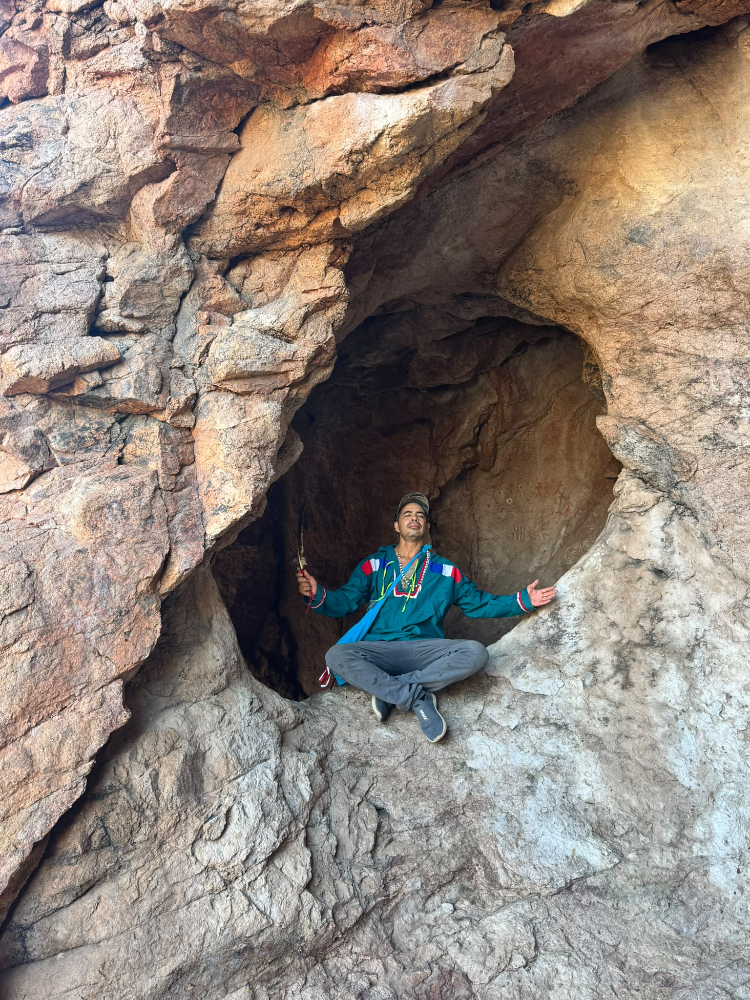
An authentic indigenous vision quest
The Comcaac (Seri) nation, together with Infinity Shaman School, offer a rare opportunity for an authentic indigenous vision quest in the ancestral sacred cave of Desemboque de los Seris, on the shore of the Sea of Cortez.
Held by a Seri Master Shaman in a place the Comcaac have kept sacred for generations, this is a journey of solitude, prayer, and vision. Come to the cave, sit with the land and your ancestors, and receive your vision and your powers.
A place kept sacred for generations
High above the desert, where the mountains meet the Sea of Cortez, the sacred cave holds the paintings of the ancestors. Its walls carry ancient pictographs, figures and marks left by those who came before, still watching over all who enter.
You will climb to the cave, be received by the Seri Master Shaman, and be held in the traditional way as you begin your quest. This is ceremony as it has always been kept here: simple, powerful, and rooted in the land.
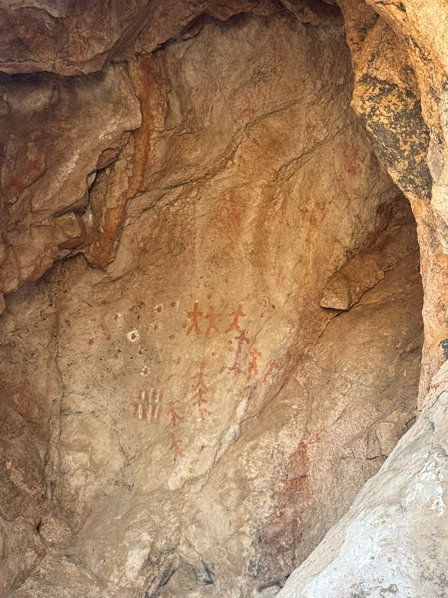
Choose your quest
Come to stay for a two-day vision quest, or, for experienced seekers, a four-day vision quest in the ancestral sacred cave. Every journey is guided by the Seri Master Shaman and held with care.
Come and receive your vision in the sacred cave, guided and protected by the Seri Master Shaman. A powerful first quest, open to all who feel the call.
A deeper passage in the cave for experienced seekers who have walked this path before. Please reach out and we will speak with you about whether this quest is right for you.
The offering
The offering for the two-day vision quest is made in two parts: a donation to the Seri Master Shaman who guides your quest, and a contribution toward housing, food, and travel.
14,000 pesos total · approximately $800 USD
Answer the callThe sacred cave
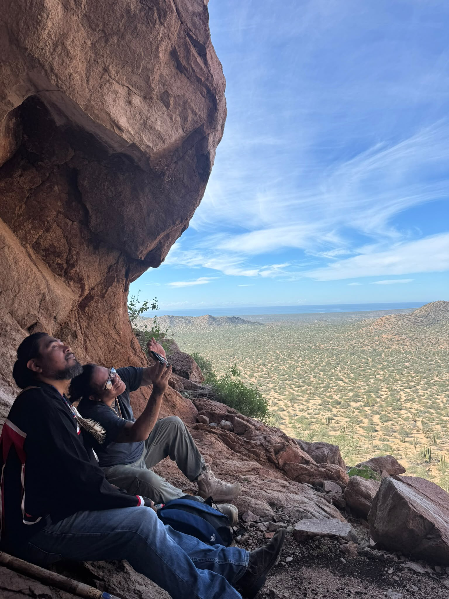
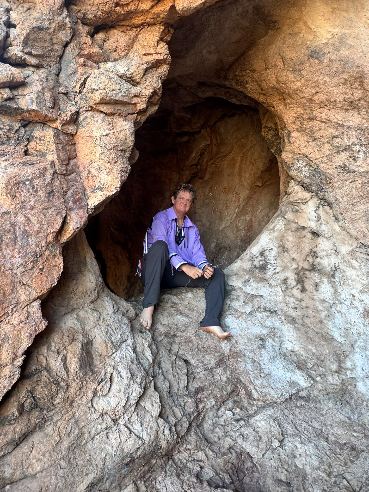
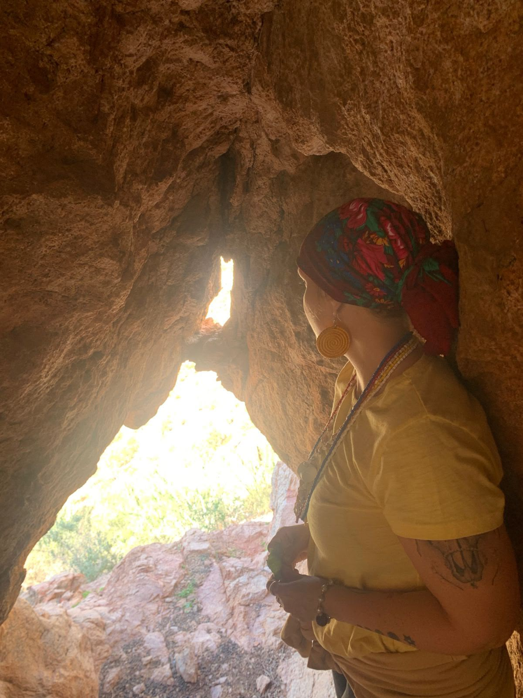
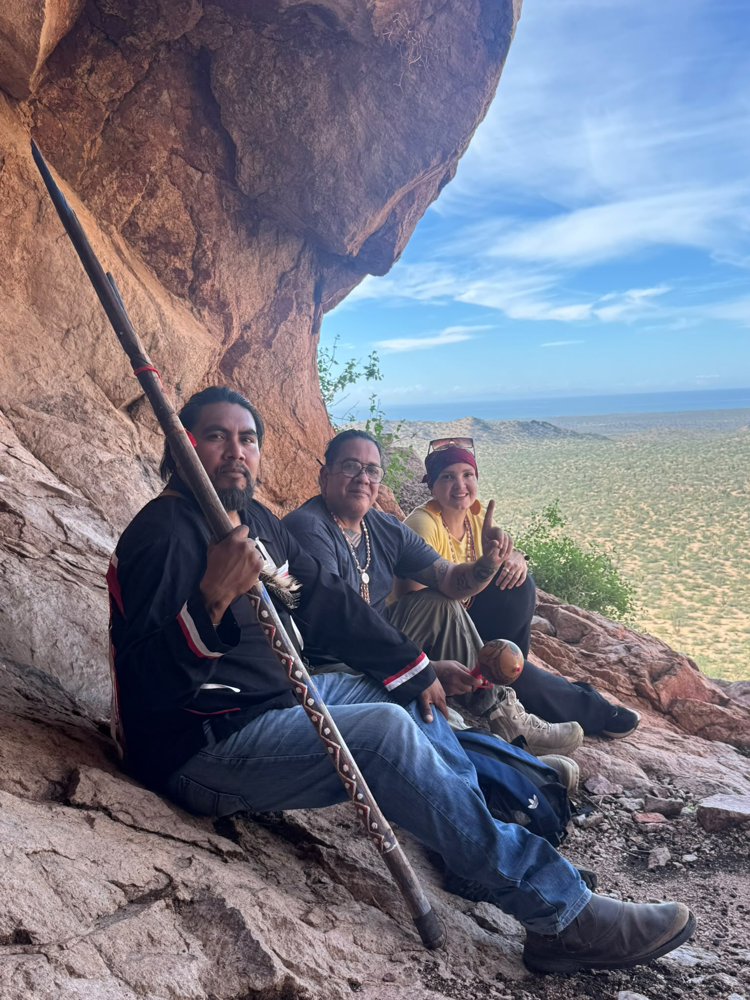
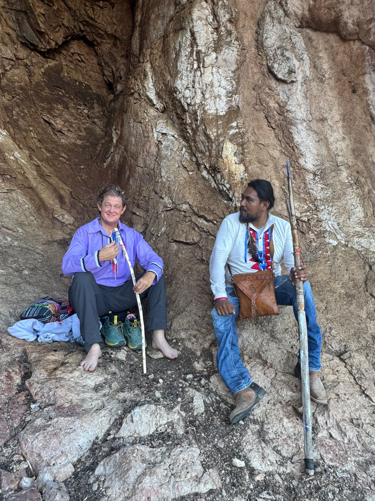
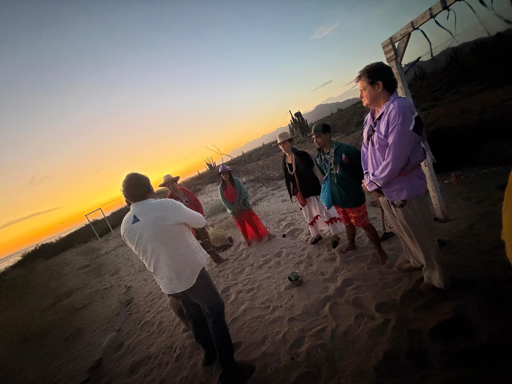
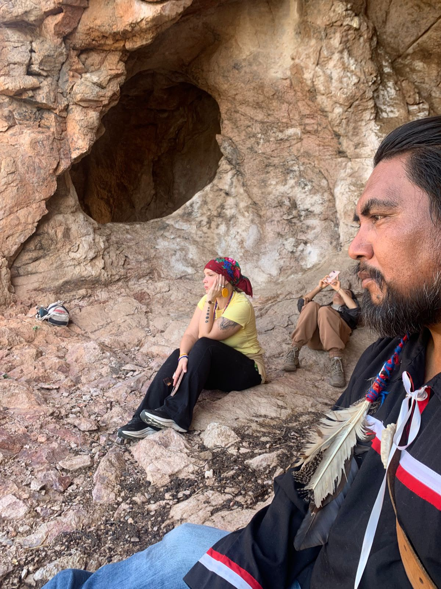
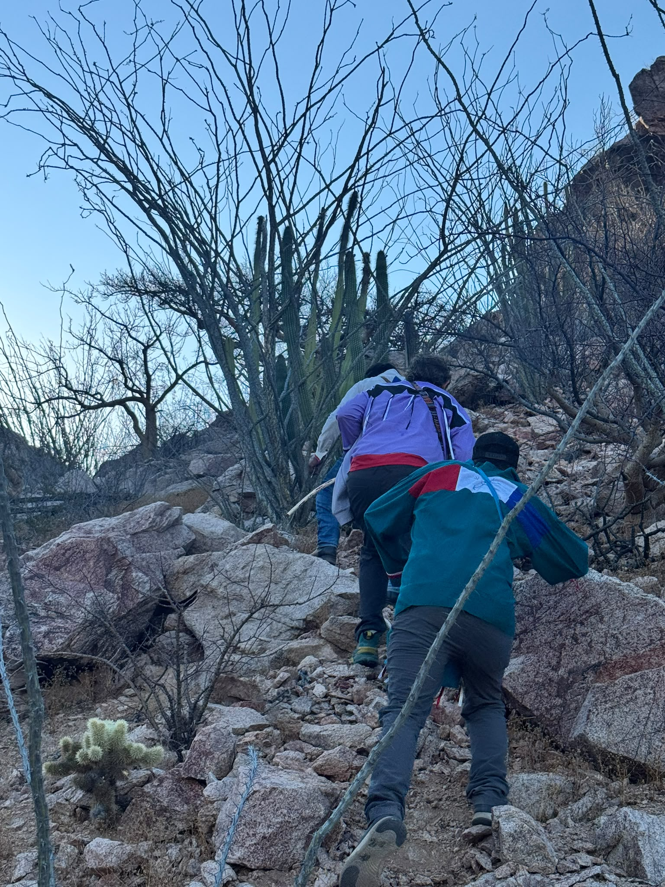
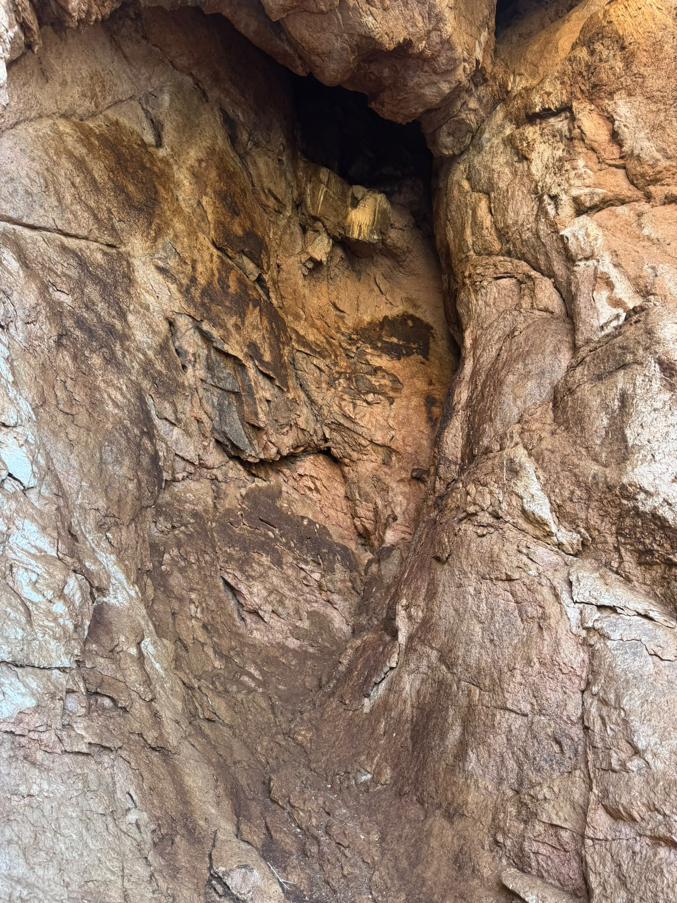